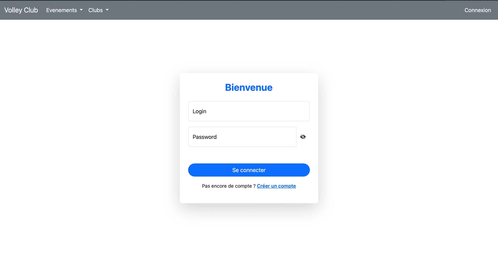
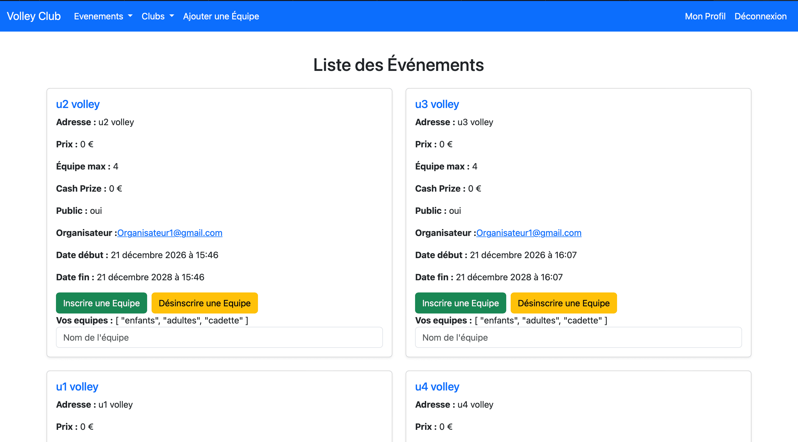

API + Front de l'API pour gérer des évènements de volley-ball
Fin 2024
Ce projet, réalisé en troisième année de BUT informatique, consistait à développer une API REST de gestions d’événements de volley-ball en Symfony ainsi qu'au développement du front cette API en Vue.JS et à son hébergement.
Lors de ce projet j'ai pu structurer des endpoints en respectant les bonnes pratiques de l'architecture REST et de même pour l'utilisation des méthodes HTTP (GET, POST, PATCH, PUT, DELETE). De plus, j'ai mis en place l'autentification avec JWT (JSON Web Token) afin de sécuriser l'accès aux données.

RESSOURCES
Projet en groupe (3 personnes)
frameworks web
Programmation avancée
CONTEXTE
Durée : 1 mois et demi
Évaluation : rendu des sources du projet ainsi qu'un fichier README.
Attente : réaliser au minimum toutes les tâches données par les professeurs.

Voici la page d'accueil du site web lorsqu'on est connecté. Le site est fonctionnel voici les fonctionnalitées déjà présentes : s'inscrire, se connecter, gérer son compte (mise à jour, suppression...) mais aussi, selon son rôle (Admin, Organisateur ou Coach), gérer des évenements, gérer des clubs, gérer des équipes et il y a tout leur affichages
Relations entre les réalisations personnelles et le programme de BUT Informatique
CE 1.06 - Réaliser : choisir les ressources techniques appropriées.
Ex : Utilisation de docker.
CE 6.04 - Collaborer : développer une communication efficace et collaborative.
Ex : Mise en place d'un Discord et de réunions quotidiennes.
AC 31.01 - Réaliser : choisir et implémenter les architectures adaptées.
Acquis
Ex : Développement d'une API avec l'architecture REST
AC 31.03 - Réaliser : intégrer des solutions dans un environnement de production